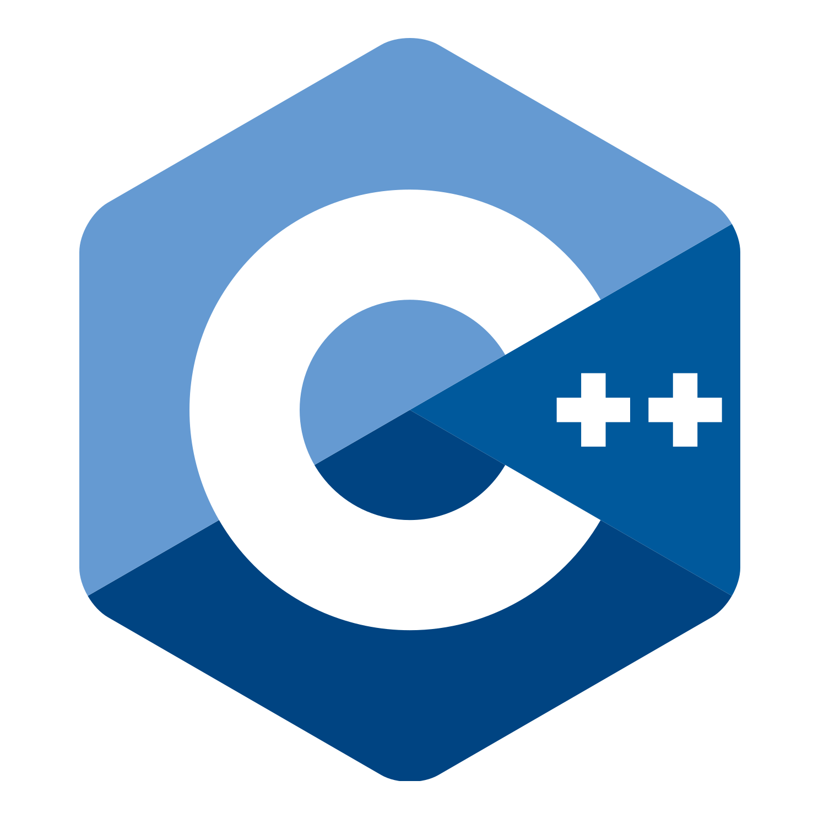
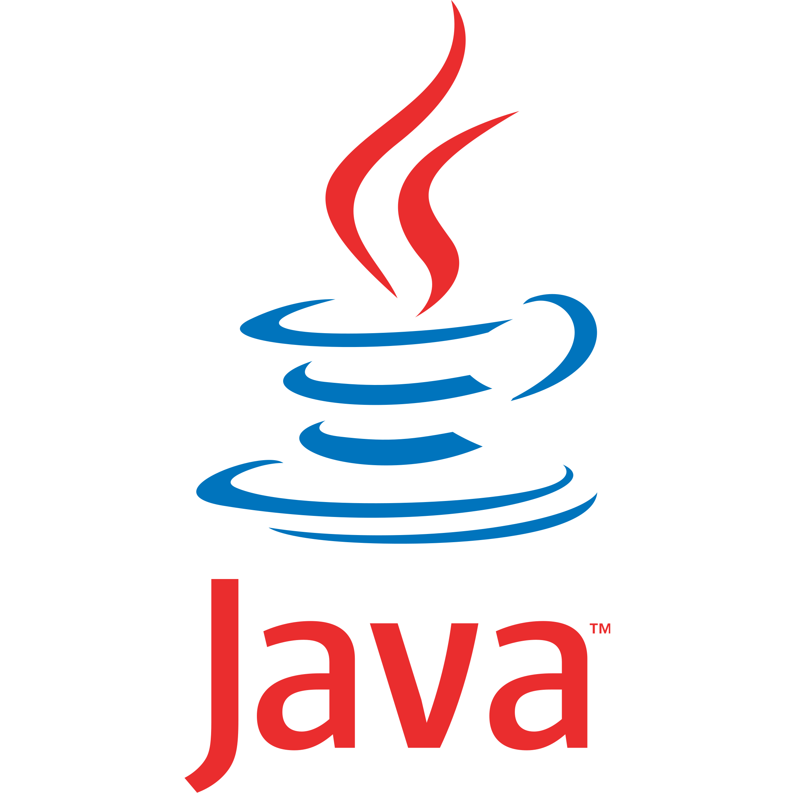
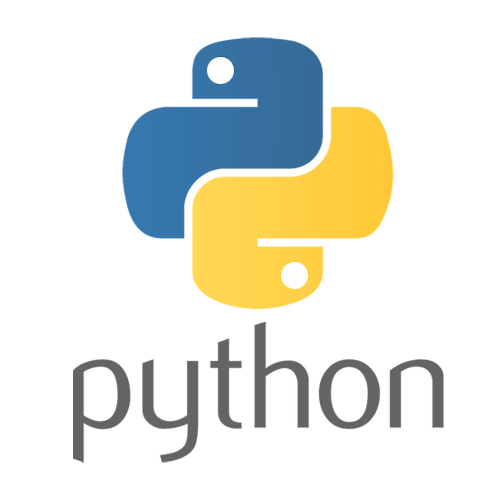
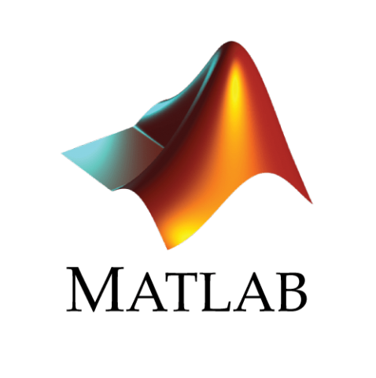
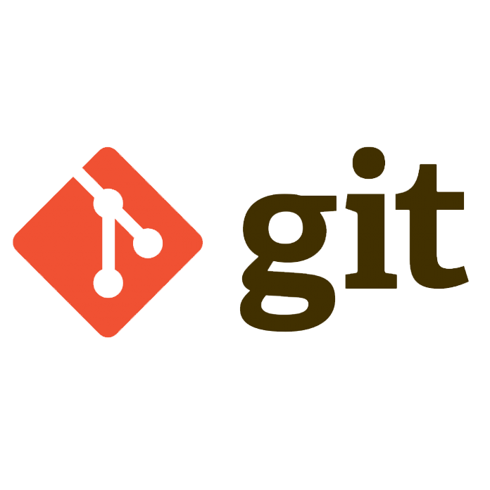

Roberto Ciardi
Embedded Computing Systems Engineer.# About me
I've grown with LEGO, computers. I'm a fond of science and technology and I enjoy the act of discovering.
I've become a Computer Engineer at University of Pisa in 2015. Then I have obtained the MSc in Embedded Computing Systems, jointly awarded by University of Pisa and Sant'Anna School of Advanced Studies.
During my university career I had the occasion to develop several projects, working on different type of technologies: from software programming to IoT, from Artificial Intelligence to Robotics, and beyond. The nature of the master degree course, totally thaught in English, along with a seven months internship in United States, has also helped me to deepen my language skills.
I'm an ironic boy, in the body of a man, who enjoys everything like a child.
# My Experience
* Work Experience
$ Radiation Safety and Control Services (RSCS Inc)
August 2019 - March 2020
Seabrook, NH, United States.
Embedded Developer Intern.
I have worked to the implementation of a real-time automatic mapping and localization system for a Surface Contamination Monitor for large-area surveys. The work was part of my master thesis project.
$ Adacto
March 2015 - August 2015
Empoli, FI, Italy.
Web Developer.
* Education
@ University of Pisa and Sant'Anna School of Advanced Studies
Master's Degree in Embedded Computing System.
Graduated in 2018/2019
@ University of Pisa
Bachelor's Degree in Computer Engineering.
Graduated in 2014/2015
* Volunteering
@ Design Automation and Test in Europe conference 2019 (DATE 19)
March 2019
Florence, Italy.
Audio/Video assistant.
@ Internet Festival (IF 18)
October 2018
Pisa, Italy.
Volunteer.
# My skills
+ Programming Languages
  + Software and Tools
 # Other / Awards
°I am member of the Mensa association since 2017.°I have taken part to Samsung Innovation Camp 2018.
°A project I have developed with a colleague, Neural Network for Evaluation of Differences Between Colors, has been part of a IEEE conference paper: A Neural System for Faithful Color Reproduction in Industrial Printing Processes